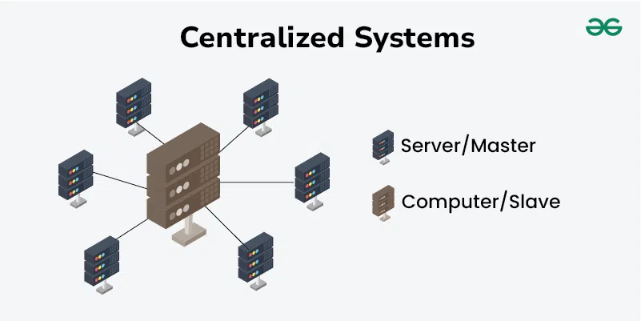
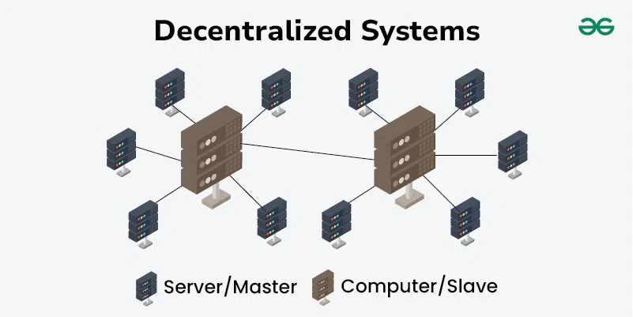
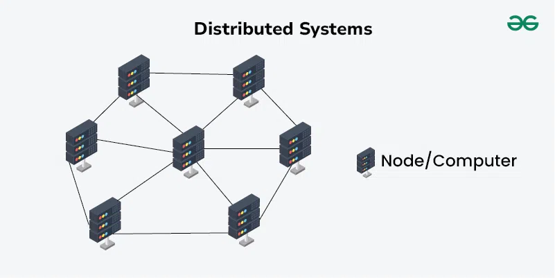

Figure 10.2: Centralized System [2]
Centralized systems are a type of computing architecture in which the majority of processing and data storage occurs on a single central server or a closely connected group of servers. This central server manages all operations, resources, and data, serving as the hub for processing all client requests. The connected clients, or nodes, typically have limited processing power and depend on the central server for most computational tasks.
Decentralized System:

Figure 10.3: Decentalized System [2]
Decentralized systems are computing architectures in which multiple nodes, often located in different places, share control and processing power without relying on a single central authority. Each node in a decentralized system operates independently while collaborating with others to achieve common goals. This structure improves fault tolerance, scalability, and resilience compared to centralized systems.
Distributed System:

Figure 10.4: Distributed System [2]
Distributed systems are computing architectures in which multiple independent nodes or computers collaborate to achieve a common goal. These nodes communicate and coordinate with one another over a network, functioning as a single cohesive system for the end user. The primary objectives of distributed systems are to enhance performance, reliability, scalability, and resource sharing by utilizing the collective power of interconnected devices.
Comparison between them [2]:
Table 10.1: A Comparison Between System Architectures.
Aspect
Centralized Systems
Decentralized Systems
Distributed Systems
Definition
Single central server controls and manages all operations.
Multiple nodes with independent control, no central authority.
Multiple interconnected nodes working together as a single system.
Control
Centralized control with a single point of management.
Distributed control, each node operates independently.
Shared control, nodes collaborate to achieve common goals.
Single Point of Failure
High risk; if the central server fails, the whole system fails.
Reduced risk; failure of one node does not impact the entire system.
Reduced risk; designed for fault tolerance and redundancy.
Scalability
Limited scalability, can become a bottleneck.
More scalable, can add nodes independently.
Highly scalable, can add more nodes to distribute the load.
Resource Utilization
Central server resources are heavily utilized.
Resources are spread across multiple nodes.
Efficient resource sharing across nodes.
Performance
Can be high initially but may degrade with increased load.
Generally good, performance improves with more nodes.
High performance due to parallel processing and resource sharing.
Management
Easier to manage centrally.
More complex, requires managing multiple nodes.
Complex, requires coordination and management of many nodes.
Latency
Lower latency, as operations are managed centrally.
Can vary, depends on the distance between nodes.
Potentially higher latency due to network communication.